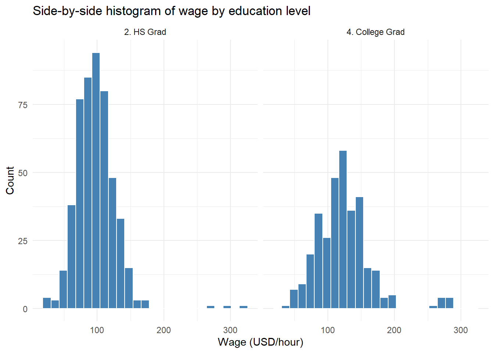

mindmap
root((Frequentist
Hypothesis
Testings
))
Simulation Based<br/>Tests
Classical<br/>Tests
(Chapter 1: <br/>Tests for One<br/>Continuous<br/>Population Mean)
(Chapter 2: <br/>Tests for Two<br/>Continuous<br/>Population Means)
Two<br/>Independent<br/>Populations
{{Unbounded<br/>Responses}}
Unknown<br/>Population<br/>Variances
Population<br/>Variances<br/>are assumed<br/>to be Equal
)Two sample<br/>Student's t test<br/>for Independent<br/>Samples(
Population<br/>Variances<br/>are assumed<br/>to be Unequal
)Two sample<br/>Welch's t test<br/>for Independent<br/>Samples(
Known<br/>Population<br/>Variances
)Two sample z test<br/>for Independent<br/>Samples(
{{Proportions between<br/>0 and 1<br/>obtained from two <br/>Binary Responses}}
)Two sample z test<br/>for Independent<br/>Samples(
Two<br/>Related<br/>Populations or<br/>Measurements
{{Unbounded<br/>Responses}}
)Two sample t test<br/>for Paired<br/>Samples(
(Chapter 3: <br/>ANOVA-related <br/>Tests for<br/>k Continuous<br/>Population Means)
3 Tests for Two Continuous Population Mean
Learning Objectives
By the end of this chapter, you should be able to:
Formulate hypotheses to compare means or proportions in two population.
Choose and conduct appropriate two-sample
t-testsor two-proportionz-testsbased on study context and assumptions.Differentiate between independent and paired samples, and choose the appropriate analysis method.
Perform two-sample and paired
t-testsandz-testusing bothRandPython, and interpret the outputs.Apply statistical reasoning to real-world data examples, including evaluating assumptions and limitations.
This chapter introduces statistical tests designed to compare two samples which is a fundamental task in data analysis across many disciplines. Whether you’re comparing average recovery times between two medical treatments, student test scores under different teaching methods, comparing the proportion among two samples, or reaction times under varying stress conditions, these methods help determine whether observed differences are statistically significant or simply due to chance.
In this chapter, we review tests for comparing two continuous population means under two conditions: when the populations are independent and when they are dependent. Throughout the sections below, we provide details about these tests and required formula for each case. Broadly speaking, there are two main types of tests to compare the means between two continuous populations:
- Independent samples, where the observations in one group are unrelated to those in the other, and
- Paired (or dependent) samples, where observations are naturally matched in some way, such as before-and-after measurements.
The choice of test depends on the structure of your data. This chapter introduces both types of comparisons, beginning with independent samples. Each section includes definitions, theoretical background, and R/Python code examples using real or simulated data sets to help ground the concepts in practice. We also review the theoretical background and exmaple codes to test two proportions.
3.1 Two sample Student’s t-test for Independent Samples
3.1.1 Review
In this section we talk about two sample student’s t-test for independent samples. Independent samples arise when the observations in one group do not influence or relate to the observations in the other. In statistical terms we call this two independent samples. A classic example from educational research is described below:
Suppose you’re interested in whether a new method of teaching introductory physics improves student performance and learning experience. To investigate this, you decide to test the method at two universities: the University of British Columbia (UBC) and Simon Fraser University (SFU). You apply the new teaching method at SFU and compare the results to students taught with the traditional method at UBC.
In this scenario, students at UBC and SFU form two distinct, unrelated groups. Since the students are not paired or matched across schools, and each individual belongs to only one group, the samples are independent. Note that the samples are drawn from two independent population: students at UBC and SFU, respectively.
Let us assume that each population has an unknown average or mean physics score denoted by:
\[ \mu_1 \quad \text{(mean for UBC)}, \quad \mu_2 \quad \text{(mean for SFU)}. \]
Since we do not have access to all students’ grades, we take a random sample from each school. Suppose:
From UBC (Population 1), we obtain a sample of size \(n\), denoted as: \[X_1, X_2, \ldots, X_n\]
From SFU (Population 2), we obtain a sample of size \(m\), denoted as: \[Y_1, Y_2, \ldots, Y_m\]
Note that the sample sizes \(n\) and \(m\) do not necessarily have to be equal. Now, the central question becomes:
Is there a statistically significant difference between the mean physics scores among two groups?
In formal terms, we test the hypotheses:
\[H_0: \mu_1 = \mu_2 \quad \text{versus} \quad H_A: \mu_1 \ne \mu_2\] Now that we reviewed the test concept, let’s try to understand it in a read data set. The steps below follows closely with the roadmap that we introduced in [LINK HERE].
3.1.2 Study design
For this example, we will be using Auto data set from ISLR package. This data set contains gas mileage, horsepower, and other information for 392 vehicles. Some of variables of interest are: 1) cylinders an integer (numerical) value between 4 and 8 which indicates the number of cylinders of car, and 2) horsepower which shows engine horsepower. You may wondering if the mean of horsepower in cars with 8 cylinders is statistically different than the means in cars with 4 cylinders?
3.1.3 Data Collection and Wrangling
To answer this question, we obtain the data set which is available in ISLR package. Note that we consider this data a random sample from population of cars. First we create a new copy of this data set to avoid touching the actual data (this is optional). Also we filter rows to those cars with 4 or 8 cylinders only.
Finally, we randomly create test and train set from this data set. We use a proportion of 50-50 between train and test.
3.1.4 Explanatory Data Analysis
Once we have the data and it is split into training and test sets, the next step is to begin exploratory data analysis (EDA) on train set. This step is crucial, as it helps us gain a better understanding of the distribution of variables in our data set. The horsepower variable in data set is a numerical variable. The cylinders variable is an integer variable that helps to divide observations into two groups.
In particular, we are interested in the distribution of horsepower in two different groups (cars with 4 cylinders vs cars with 8 cylinders). Using a histogram for this variable is a good choice as we have a variable with numerical values.

We also look at some descriptive statistics of horsepower in both groups for better understanding of data. The descriptive statistics in cars with 4 cylinders:
horsepower
Min. : 46.00
1st Qu.: 68.00
Median : 78.50
Mean : 78.33
3rd Qu.: 88.00
Max. :113.00 and with 8 cylinders:
horsepower
Min. :105
1st Qu.:140
Median :150
Mean :160
3rd Qu.:175
Max. :225 Looking at summary statistics, there is a bit of overlap between distribution of horsepower among two groups but it does not seem to be much. In fact they seem to be quite separated. Also there is a clear different in their mean and the following plot also confirms this:

3.1.5 Testing Settings
We use a significant level of \(\alpha = 0.05\) to run the test. Considering the data we have is a sample from a population of cars we have the following:
- \(\mu_{1}\) is the mean of horsepower for cars with 4 cylinders in the population.
- \(\mu_{2}\) is the mean of horsepower for cars with 8 cylinders in the population.
3.1.6 Hypothesis Definitions
We now define the null and alternative hypothesis. Recall the main inquiry we had:
You may wondering if the average of horsepower in cars with 4 cylinders is statistically different than the means in cars with 8 cylinders?
This translates into the following null and alternative hypotheses:
\[H_0: \mu_{1} = \mu_{2} \quad vs \quad H_a: \mu_{1} \neq \mu_{2} \tag{3.1}\]
Note that the alternative hypothesis is two-sided, as our question does not favor either group and only asks whether the means are different (i.e., group one could be less than or greater than group two). Also the hypothesis tests the unknown parameters in the population which are \(\mu_{1}\) and \(\mu_{2}\). Equation 3.1
3.1.7 Test Flavour and Components
To test this hypothesis, we use the two-sample student’s t-test for independent samples, which compares the sample means and incorporates variability within and between the samples. Note that in this case the samples are independent as clearly cars with 4 cylinders are independent from cars with 8 cylinders.
Now we need to compute a test statistic from the sample. Assuming equal population variances, the test statistic is:
\[t = \frac{(\bar{X} - \bar{Y})}{S_p \sqrt{\frac{1}{n} + \frac{1}{m}}}\] where:
- \(\bar{X}\) is the mean of horsepower for cars with 4 cylinders in the sample
- \(\bar{Y}\) is the mean of horsepower for cars with 8 cylinders in the sample
- \(S_p\) is the , computed as:
- \(S_p = \sqrt{\frac{(n - 1)S_X^2 + (m - 1)S_Y^2}{n + m - 2}}\)
- \(S_X^2\) and \(S_Y^2\) are the sample variances of the two groups.
Heads-up!
Note that all elements in this formula (statistic) are computed based on sample.
Tip:
The assumption in this test is that variances among two groups are equal meaning that if we look at the random variable of horsepower in both populations, the variance of this random variable is roughly equal in two groups (cars with 4 cylinders and cars with 8 cylinders).
Note that we do not have access to population and this is rather an assumption that we make with consultation with experts or justifying it based on previous studies. We will introduce the test without equal variance assumption in the next section.
There are some statistical methods designed to test if the variances of different groups are the same or not. Similar to any hypothesis testing, these tests work on a random sample from the population to run the test. Some of the tests are F-test for Equality of Variances, Levene’s Test, and Bartlett’s Test.
3.1.8 Inferential Conclusions
As you can see, the test statistic computes the difference between \(\bar{X}\) and \(\bar{Y}\) and scale it based on the variance of this difference. Now the question is whether this difference is significant or not? In order to answer this question we need to know the behavior of statistic that we defined (\(t\)) and have a better understanding of what are typical values of this statistic. Knowing the distribution of this statistic helps us to compute \(\textit{p-value}\) of the test as follows:
\[\textit{p-value} = 2 \times Pr(T_{n+m-2} \ge |t|)\]
Looking at the formula, we can see that we are essentially calculating how much is it likely to see an observation as big as \(t\) or as extreme as \(t\) (which we computed from our sample).
Heads-up!
Note that \(t\) itself is a random variable as it would change from sample to sample.
Tip:
We skipped the theory behind it but under the assumption that null hypothesis is correct (i.e. \(\mu_1=\mu_2\)) then the test statistic defined above (\(t\)) follows a t-distribution with \(n + m -2\) degrees of freedom (which we denote it by \(T_{n+m-2}\)).
Note: The probability is multiplied by two since we have a two sided hypothesis (alternative is \(\mu_1 \neq \mu_2\)). For a one sided test (when alternative hypothesis is \(\mu_1 > \mu_2\) or \(\mu_1 < \mu_2\)) we do not need to multiply by two.
Now we compare the \(\textit{p-value}\) to our significance level. If the \(\textit{p-value}\) is less than the significance level, then we have evidence against the null hypothesis. The reasoning is as follows: we performed the calculation under the assumption that the null hypothesis is true. If the null hypothesis is true, then the test statistic we computed should follow a \(t\)-distribution with \(n + m - 2\) degrees of freedom. If the p-value is smaller than our chosen significance level, this means it is unlikely that our observed result comes from a \(t\)-distribution with \(n + m - 2\) degrees of freedom. In other words, it is unlikely that the null hypothesis is correct.
Note that our observation from the sample might still lead us to an incorrect conclusion (since there is variability among samples). Our tolerance for this type of error is determined by the significance level. If \(\textit{p-value}\) is not less than significant level then we do not have any evidence to reject the null hypothesis. Now let us see how to run the two-sample test in R and Python. Note that for the purpose of hypothesis testing we now use test data to avoid double dipping.
3.1.9 How to run the test in R and Python?
The following lines of code in tabset show you how to run the test in R or Python. Note that there are two ways of running this test in R as shown below. They both give the same result and you are welcome to use either of them. Here is a quick explanation from a coding perspective:
In Option 1, we first select the cars with 4 or 8 cylinders and save them in a vector (
cylinders_4andcylinders_8). We then uset.testfunction to run the test.In Option 2, we use a formula to tell
Rwhat is the variable that records the outcome of interest (in this examplehorsepowervariable) and what is the grouping variable (in this examplecylinders). This approach is more concise and easier to read, especially when working directly with a data frame. Note that we need to letRknow where it can findhorsepowerandcylinderswhich we do by settingdata = test_auto.
# Create a vector to hold horsepower values for cars with 4 cylinders
cylinders_4 <- test_auto %>% filter(cylinders == 4) %>% select(horsepower)
# Create a vector to hold horsepower values for cars with 8 cylinders
cylinders_8 <- test_auto %>% filter(cylinders == 8) %>% select(horsepower)
# Run the test
t.test(x = cylinders_4, y = cylinders_8, var.equal = TRUE)
Two Sample t-test
data: cylinders_4 and cylinders_8
t = -21.344, df = 149, p-value < 2.2e-16
alternative hypothesis: true difference in means is not equal to 0
95 percent confidence interval:
-85.12730 -70.70086
sample estimates:
mean of x mean of y
78.2381 156.1522 # Use the formula horsepower ~ cylinders to run the test
t.test(horsepower ~ cylinders, data = test_auto, var.equal=TRUE)
Two Sample t-test
data: horsepower by cylinders
t = -21.344, df = 149, p-value < 2.2e-16
alternative hypothesis: true difference in means between group 4 and group 8 is not equal to 0
95 percent confidence interval:
-85.12730 -70.70086
sample estimates:
mean in group 4 mean in group 8
78.2381 156.1522 from scipy import stats
import pandas as pd
# Read test_auto dataframe in Python as df dataframe
df = pd.read_csv('data/test_auto.csv')
# Select cars with 4 and 8 cylinders
cylinders_4 = df[df["cylinders"] == 4]["horsepower"]
cylinders_8 = df[df["cylinders"] == 8]["horsepower"]
# Run the test
t_stat, p_val = stats.ttest_ind(cylinders_4, cylinders_8, equal_var = True)
# Print t statistic value
print(f"T-statistic: {t_stat}")T-statistic: -21.34403814660459# Print p-value of the test
print(f"P-value: {p_val}")P-value: 3.6294706302411423e-47In order to run this test, similar to what we learned in (LINK to chapter 1) we can use t.test function in R. The function can be used to perform one or two sample t-tests. The relevant arguments of the function are as follows:
-
xis (non-empty) numeric vector of data values. -
yis also (non-empty) numeric vector of data values (can beNULLif you run a one sample test). -
var.equalis a binary value (TRUE/FALSE) to indicate if R needs to assume equal variance or not.
In both outputs, we can see the following:
tis the test statistic.dfis the degrees of freedom for the test.
p-value is the p-value of the test. Note that, by default, this is for a two-sided test. If you need to conduct a one-sided test, you can either divide the p-value by two or use the alternative argument in the t.test function.
95 percent confidence intervalprovides the 95% confidence interval for the parameter of \(\mu_1 - \mu_2\).sample estimatesgives the sample means for each group.
Note: By default the value of var.equal is FALSE. We manully set it to TRUE to implement equal variance assumption in our test.
3.1.10 Storytelling
Finally, based on the sample we have and the analysis we conducted, we can draw a conclusion about our initial question: Is the mean horsepower of cars with 8 cylinders statistically different from that of cars with 4 cylinders? We observed that the \(p-\textit{value}\) of the test was extremely small compared to the significance level \(\alpha = 0.05\). This provides evidence against the null hypothesis. In simple terms, this means: There appears to be a noticeable difference in the average horsepower between cars with 4 cylinders and those with 8 cylinders.
3.2 Two sample Welch’s t-test for independent samples
3.2.1 Review
In this section we talk about two sample Welch’s t-test for independent samples. This test is very similar to two sample Student’s t-test for independent samples that we described with a caveat. The two samples are still independent but the only difference is the equal variance assumption. We use this test if we do not have any reason or evidence to believe that the variance of variable of interest is the same among two groups in the population.
3.2.2 Study Design
We will be using Auto data set from ISLR package in this section too. Now the main statistical question of interest remains the same as before: You may wondering if the mean of horsepower in cars with 8 cylinders is statistically different than the means in cars with 4 cylinders? but we do not make an equal variance assumption anymore. Now we are applying a two sample Welch’s t-test for independent samples.
3.2.3 Data Collection and Wrangling
To answer this question, we obtain the data set which is available in ISLR package. The following codes are exactly the same as before and are shown here as a review.
Finally, we randomly create test and train set from this data set. We use a proportion of 50-50 between train and test.
3.2.4 Explanatory Data Analysis
Once we have the data and it is split into training and test sets, the next step is to begin exploratory data analysis (EDA) on train set. Recall that the cylinders variable is an integer variable that helps to divide observations into two groups.
We are still interested in the distribution of horsepower in two different groups (cars with 4 cylinders vs cars with 8 cylinders). Using a histogram for this variable is a good choice as we have a variable with numerical values.
The following lines of code are the same as previous section as we are working on the same data. This is shown as a reminder.
We also look at some descriptive statistics of horsepower in both groups for better understanding of data. The descriptive statistics in cars with 4 cylinders:
horsepower
Min. : 46.00
1st Qu.: 68.00
Median : 78.50
Mean : 78.33
3rd Qu.: 88.00
Max. :113.00 and with 8 cylinders:
horsepower
Min. :105
1st Qu.:140
Median :150
Mean :160
3rd Qu.:175
Max. :225 Our conclusion remains the same. Looking at summary statistics, there is a bit of overlap between distribution of horsepower among two groups but it does not seem to be much. In fact they seem to be quite separated. Also there is a clear different in their mean and the following plot also confirms this:
3.2.5 Testing Settings
We use a significant level of \(\alpha = 0.05\) to run the test. Considering the data we have is a sample from a population of cars we have the following:
- \(\mu_{1}\) is the mean of horsepower for cars with 4 cylinders in the population.
- \(\mu_{2}\) is the mean of horsepower for cars with 8 cylinders in the population.
3.2.6 Hypothesis Definitions
We now define the null and alternative hypothesis. Recall the main inquiry we had:
You may wondering if the average of horsepower in cars with 4 cylinders is statistically different than the means in cars with 8 cylinders?
This translates into the following null and alternative hypotheses:
\[H_0: \mu_{1} = \mu_{2} \quad vs \quad H_a: \mu_{1} \neq \mu_{2}\]
Note that the alternative hypothesis is two-sided, as our question does not favor either group and only asks whether the means are different (i.e., group one could be less than or greater than group two). Also the hypothesis tests the unknown parameters in the population which are \(\mu_{1}\) and \(\mu_{2}\).
3.2.7 Test Flavour and Components
As noted before we use Welch’s t-test if the assumption of equal variances is questionable. This test adjusts the standard error and degrees of freedom (df) of the test accordingly. As a result the test statistic and df of the test are different. The Welch’s test statistic is computed as:
\[t = \frac{\bar{X} - \bar{Y}}{\sqrt{\frac{S_X^2}{n} + \frac{S_Y^2}{m}}}\]
where:
- \(\bar{X}\) is the mean of horsepower for cars with 4 cylinders in the sample
- \(\bar{Y}\) is the mean of horsepower for cars with 8 cylinders in the sample
- \(S_X^2\) and \(S_Y^2\) are the sample variances of the two groups.
- \(n\) and \(m\) are the sample sizes in two groups (not necessarily the same).
Quick review!
Note that, as before, all elements in this formula (statistic) are computed based on the sample. Additionally, the assumption of unequal variance between two populations can be tested using a variety of statistical tests. We do not discuss these tests in this book as the focus of this book lies elsewhere.
3.2.8 Inferential Conclusions
As you can see, the test statistic computes the difference between averages of two samples and adjusts it based on the variance of their differences. The only change from Student’s t-test is the variance that is being used in the denominator. Again the question is whether this difference is significant or not? In order to answer this question we need to know the behavior of statistic that we defined and have a better understanding of what are typical values of this statistic. Knowing the distribution of this statistic helps us to compute the \(p-value\) of the test as follows:
\[\textit{p-value} = 2 \times Pr(T_{\nu} \ge |t|)\]
Tip on degrees of freedom!
The Greek sign \(\nu\) is used here to show the degree of freedom of the t-distribution and is computed as
\[\nu = \frac{\left( \frac{s_1^2}{n} + \frac{s_2^2}{m} \right)^2} {\frac{\left( \frac{s_1^2}{n} \right)^2}{n - 1} + \frac{\left( \frac{s_2^2}{m} \right)^2}{m - 1}}\]
We skipped the theory behind it but under the assumption that null hypothesis is correct, the test statistic defined above still follows a t-distribution but with a different degrees of freedom. Note that this degree of freedom is not necessarily an integer number (could be a real number).
3.2.9 How to run the test in R and Python?
The following lines of code in tabset show you how to run the Welch’s test in R or Python.
A quick reminder!
In Option 1, we first select the cars with 4 or 8 cylinders and save them in a vector (
cylinders_4andcylinders_8). We then uset.testfunction to run the test.In Option 2, we use a formula to tell
Rwhat is the variable that records the outcome of interest (in this examplehorsepowervariable) and what is the grouping variable (in this examplecylinders). This approach is more concise and easier to read, especially when working directly with a data frame. Note that we need to letRknow where it can findhorsepowerandcylinderswhich we do by settingdata = test_auto.
# Create a vector to hold horsepower values for cars with 4 cylinders
cylinders_4 <- test_auto %>% filter(cylinders == 4) %>% select(horsepower)
# Create a vector to hold horsepower values for cars with 8 cylinders
cylinders_8 <- test_auto %>% filter(cylinders == 8) %>% select(horsepower)
# Run the test
t.test(x = cylinders_4, y = cylinders_8, var.equal = FALSE)
Welch Two Sample t-test
data: cylinders_4 and cylinders_8
t = -16.92, df = 55.789, p-value < 2.2e-16
alternative hypothesis: true difference in means is not equal to 0
95 percent confidence interval:
-87.13950 -68.68866
sample estimates:
mean of x mean of y
78.2381 156.1522 # Use the formula horsepower ~ cylinders to run the test
t.test(horsepower ~ cylinders, data = test_auto, var.equal = FALSE)
Welch Two Sample t-test
data: horsepower by cylinders
t = -16.92, df = 55.789, p-value < 2.2e-16
alternative hypothesis: true difference in means between group 4 and group 8 is not equal to 0
95 percent confidence interval:
-87.13950 -68.68866
sample estimates:
mean in group 4 mean in group 8
78.2381 156.1522 from scipy import stats
import pandas as pd
# Read test_auto dataframe in Python as df dataframe
df = pd.read_csv('data/test_auto.csv')
# Select cars with 4 and 8 cylinders
cylinders_4 = df[df["cylinders"] == 4]["horsepower"]
cylinders_8 = df[df["cylinders"] == 8]["horsepower"]
# Run the test
t_stat, p_val = stats.ttest_ind(cylinders_4, cylinders_8, equal_var = False)
# Print t statistic value
print(f"T-statistic: {t_stat}")T-statistic: -16.919952924079897# Print p-value of the test
print(f"P-value: {p_val}")P-value: 1.2443553344442986e-23In order to run this test, similar to what we learned in (LINK to chapter 1) we can use t.test function in R. The function can be used to perform one or two sample t-tests. The relevant arguments of the function are as follows:
-
xis (non-empty) numeric vector of data values. -
yis also (non-empty) numeric vector of data values (can beNULLif you run a one sample test). -
var.equalis a binary value (TRUE/FALSE) to indicate if R needs to assume equal variance or not.
In both outputs, we can see the following:
tis the test statistic.dfis the degrees of freedom for the test.
p-value is the p-value of the test. Note that, by default, this is for a two-sided test. If you need to conduct a one-sided test, you can either divide the p-value by two or use the alternative argument in the t.test function.
95 percent confidence intervalprovides the 95% confidence interval for the parameter of \(\mu_1 - \mu_2\).sample estimatesgives the sample means for each group.
Note: By default the value of var.equal is FALSE. We manully set it to FALSE to implement the test without equal variance assumption.
3.2.10 Storytelling
Finally, based on the sample we have and the analysis we conducted, we can draw a conclusion about our initial question: Is the mean horsepower of cars with 8 cylinders statistically different from that of cars with 4 cylinders? We observed that the \(p-\textit{value}\) of the test was extremely small compared to the significance level \(\alpha = 0.05\). This provides evidence against the null hypothesis. In simple terms, this means: There appears to be a noticeable difference in the average horsepower between cars with 4 cylinders and those with 8 cylinders.
3.3 Two sample z-test for Independent Samples
3.3.1 Review
In the tests we have seen so far, we estimated the variance of each group using the sample variance, i.e., \(S^2\). This approach is realistic, as in most cases we do not know the population variance of our variable of interest. However, if the population variance for each group is known, we can incorporate this information into our test.
Suppose you are analyzing wage differences between high school and college graduates using a large labor market data set. A government labor agency previously conducted extensive research and reported that the true population variances of hourly wages for both groups should be as follows:
- Population variance of wages among high school graduates: \(\sigma_1^2 = 75\)
- Population variance of wages among college graduates: \(\sigma_2^2 = 60\)
Note that this is the population variance and not the sample. You want to assess whether the average wage differs between the two groups. Since the population variances are known (e.g., from reliable historical studies or large scale sampling in previous studies), a two-sample z-test is appropriate for this case. We treat these groups as independent samples, since each person’s wage is recorded once and belongs to a distinct education level.
Since we do not have access to the wages of all individuals in each education group, we take a random sample from each population. Suppose:
- From the population of high school graduates (Population 1), we obtain a sample of size \(n\), denoted as:
\[X_1, X_2, \ldots, X_n\]
- From the population of college graduates (Population 2), we obtain a sample of size \(m\), denoted as:
\[Y_1, Y_2, \ldots, Y_m\] Note that the sample sizes \(n\) and \(m\) do not need to be equal. Also, we assume that the population variances are known and denoted as:
-
\(\sigma_1^2\): the known population variance for high school graduates
- \(\sigma_2^2\): the known population variance for college graduates
Now, the central question becomes Is there a statistically significant difference between the mean wages of high school and college graduates? In formal terms, we test the hypotheses:
\[ H_0: \mu_1 = \mu_2 \quad \text{versus} \quad H_A: \mu_1 \ne \mu_2 \] where \(\mu_1\) is the population mean of wage in high school graduates and \(\mu_2\) is the population mean of wage in college graduates.
3.3.2 Study Design
For this example, we will be using the Wage data set from the ISLR2 package. This data set contains information about wages and demographic characteristics for 3,000 workers in the Mid-Atlantic region of the United States. Some of the variables of interest are:
education, a categorical variable that records the highest level of education completed by the individual (e.g., “HS Grad”, “College Grad”), andwage, a continuous variable representing the individual’s hourly wage in USD.
You may be wondering: Is the mean wage for college graduates statistically different from the mean wage for high school graduates?
To answer this question, we will compare the sample means of these two groups using a two-sample z-test under the assumption that the population variances are known. We use the Wage data set to extract wage data for two groups:
High school graduates:
education == "HS Grad"College graduates:
education == "College Grad"
3.3.3 Data Collection and Wrangling
To answer this question, we obtain the data set which is available in the ISLR2 package. Note that we consider this data a random sample from the population of working adults. First, we create a new copy of this data set to avoid modifying the original data (this step is optional). Then, we filter the rows to keep only individuals who are either high school graduates or college graduates.
Finally, we randomly split the data set into training and testing sets, using a 50-50 proportion between train and test. This allows us to conduct our test using a subset of the data while reserving the rest for potential follow-up analysis.
3.3.4 Exploratory Data Analysis
Once we have the data and it is split into training and test sets, the next step is to begin exploratory data analysis (EDA) on the training set. This step is crucial, as it helps us gain a better understanding of the distribution of variables in our data set. The wage variable is a numerical variable that represents hourly earnings. The education variable is a categorical variable that helps us divide observations into two groups.
In particular, we are interested in the distribution of wage in two different groups (high school graduates vs college graduates). Using a histogram for this variable is a good choice as it allows us to visually inspect how the wages vary within and between these two education levels.

We also look at some descriptive statistics of wage in both groups for better understanding of the data. The descriptive statistics for high school graduates:
wage
Min. : 23.27
1st Qu.: 78.39
Median : 94.07
Mean : 97.19
3rd Qu.:111.72
Max. :318.34 and for college graduates:
wage
Min. : 40.41
1st Qu.: 97.49
Median :118.88
Mean :122.83
3rd Qu.:141.78
Max. :277.80 Looking at these summary statistics, we can see that the wage distributions for the two education groups have some overlap, and there does not appear to be a large difference in their centers. In fact, the mean wage for college graduates is only slightly higher, and this is not immediately obvious from the plots.
There appears to be some observations with higher wage values in College Grad group compared to others. The following density plot provides additional visual support for this observation:
# Density plot of wage by education group
train_wage %>%
ggplot(aes(x = wage, fill = education)) +
geom_density(alpha = 0.5) +
labs(title = 'Wage Distribution by Education Level',
x = 'Wage (USD/hour)',
y = 'Density',
fill = "Education") +
theme_minimal()3.3.5 Testing Settings
We use a significance level of \(\alpha = 0.05\) to conduct the hypothesis test. Since the data we have is a sample from a larger population of workers, we define the following population parameters:
-
\(\mu_{1}\) is the mean wage of individuals with a high school education in the population.
- \(\mu_{2}\) is the mean wage of individuals with a college education in the population.
Our goal is to test whether the population mean wage differs between these two educational groups.
3.3.6 Hypothesis Definitions
We now define the null and alternative hypothesis. Recall the main inquiry we had:
Is the mean wage for college graduates statistically different from the mean wage for high school graduates?
This translates into the following null and alternative hypotheses:
\[H_0: \mu_{1} = \mu_{2} \quad vs \quad H_a: \mu_{1} \neq \mu_{2}\]
3.3.7 Test Flavour and Components
To test this hypothesis, we use the two-sample z-test for independent samples with known population variances, which compares the sample means and incorporates the known variability within each population. Note that the samples are independent. The test statistic for this test is computed as:
\[ z = \frac{\bar{X} - \bar{Y}}{\sqrt{\frac{\sigma_1^2}{n} + \frac{\sigma_2^2}{m}}} \]
where:
- \(\bar{X}\) is the mean wage of individuals with a high school education in the sample.
- \(\bar{Y}\) is the mean wage of individuals with a college education in the sample.
- \(\sigma_1^2\) and \(\sigma_2^2\) are the known population variances of the two groups
- \(n\) and \(m\) are the sample sizes of the two groups
Because population variances are known, the standard error of the difference in sample means is computed directly from the population variances, avoiding the need to estimate variance from the samples.
3.3.8 Inferential Conclusions
As you can see, the test statistic computes the difference between \(\bar{X}\) and \(\bar{Y}\) and scales it based on the known variance of this difference. Now the question is whether this difference is significant or not? To answer this, we need to understand the behavior of the statistic we defined (\(z\)) and what typical values it can take.
As we shown before, knowing the distribution of this statistic allows us to compute the \(\textit{p-value}\) of the test as follows:
\[ \textit{p-value} = 2 \times Pr(|Z| \ge |z|) \]
Looking at the formula, we are essentially calculating how likely it is to observe a value as extreme as \(z\) under the null hypothesis.
Heads-up!
Note that \(z\) itself is a random variable that would vary from sample to sample.
Tip:
Under the assumption that the null hypothesis is correct (i.e., \(\mu_1 = \mu_2\)), the test statistic \(z\) follows the standard normal distribution that textbooks usually denote it by \(N(0,1)\). The first element is mean (0) and the second one is the standard deviation (1).
Note: The probability is multiplied by two because we are conducting a two-sided test (alternative hypothesis: \(\mu_1 \neq \mu_2\)). For a one-sided test (e.g., \(\mu_1 > \mu_2\) or \(\mu_1 < \mu_2\)) this multiplication is not needed.
We compare the \(\textit{p-value}\) to our significance level \(\alpha\). If the \(\textit{p-value}\) is less than \(\alpha\), then we have evidence against the null hypothesis. The reasoning is: assuming the null hypothesis is true, the test statistic should follow a standard normal distribution. A very small p-value means our observed \(z\) is unlikely under this distribution, and so it is unlikely the null hypothesis is correct.
3.3.9 How to run the two-sample z-test in R and Python
The following examples show how to implement the two-sample z-test for independent samples with known population variances in both R and Python using the Wage data set.
Important reminder!
Note that we know the population variances \(\sigma_1^2 = 75\) for high school graduates and \(\sigma_2^2 = 60\) for college graduates from previous studies.
The test statistic \(z\) is calculated by
z.testfunction fromBSDApackage which have a similar input and output tot.testfunction.
# Filter test_wage data to create two groups: High school graduates and college graduates
hs_wages <- test_wage %>% filter(education == "2. HS Grad") %>% pull(wage)
col_wages <- test_wage %>% filter(education == "4. College Grad") %>% pull(wage)
# Set the known population variances
sigma2_hs <- 75
sigma2_col <- 60
# Run two-sample z-test with known variances using z.test function from BSDA package
result <- z.test(
x = hs_wages,
y = col_wages,
sigma.x = sqrt(sigma2_hs), # standard deviation for group 1
sigma.y = sqrt(sigma2_col), # standard deviation for group 2
alternative = "two.sided"
)
# Print results
print(result)
Two-sample z-Test
data: hs_wages and col_wages
z = -55.239, p-value < 2.2e-16
alternative hypothesis: true difference in means is not equal to 0
95 percent confidence interval:
-32.72362 -30.48102
sample estimates:
mean of x mean of y
94.29543 125.89775 import pandas as pd
import numpy as np
# Read data set
df = pd.read_csv('data/test_wage.csv')In order to run the two-sample z-test with known population variances, we use the z.test function from the BSDA package in R. This function is designed to handle one and two sample z-tests when population standard deviations are known. The key arguments of z.test for a two-sample test are:
-
x: a numeric vector of data values for group 1. -
y: a numeric vector of data values for group 2. -
sigma_x: the known population standard deviation for group 1. -
sigma_y: the known population standard deviation for group 2. -
alternative: specifies the alternative hypothesis;"two.sided"by default for a two-sided test.
Note: sigma_x and sigma_y expects the standard deviation of each group and not the variance. As a result in the R code in tabset we passed sqrt(sigma2_hs) and sqrt(sigma2_col).
When you run the test, the output includes:
-
statistic: the calculated z test statistic. -
p.value: the p-value for the test based on the standard normal distribution. -
conf.int: the confidence interval for the difference in means \(\mu_1 - \mu_2\). -
estimate: the sample means for each group.
Note: The z.test function assumes that the population standard deviations are known and uses them directly to compute the test statistic and confidence interval. This differs from tests that estimate variance from the samples, such as t-tests that we have been studying so far.
3.3.10 Storytelling
3.4 Two sample t-test for Paired Samples
3.4.1 Review
In this section, we discuss the two sample t-test for paired samples which is used when we have two sets of related observations. Unlike the two-sample t-tests for independent samples that we discussed so far (such as the Student’s or Welch’s t-test), the paired t-test is appropriate when the two samples are dependent. This means each observation in one sample can be naturally paired with an observation in the other. Examples of such are before-and-after measurements on the same subjects, or matched subjects across two different conditions. The key idea is that the test evaluates whether the mean difference between paired observations is significantly different from zero.
When to use this test!
We use the paired sample t-test when:
The data consist of paired observations.
The differences between pairs are approximately normally distributed or at least symmetric (especially important for small sample sizes).
And the measurement scale is continuous.
Paired samples arise when each observation in one group is matched or linked to an observation in the other group. This structure is typical in before-and-after studies, matched-subject designs, or repeated measures on the same individuals. A classic example comes from health sciences.
Suppose you are investigating whether a new diet plan reduces blood pressure. You recruit a group of participants and record their blood pressure before starting the diet. After following the diet for two months, you measure their blood pressure again. In this scenario, each participant contributes two measurements: one before the intervention and one after. Note that these measurements are not independent as they come from the same person. Therefore we treat them as paired.
To formulate the problem and hypothesis, let us assume that each individual has two measurements:
Before the diet: \(X_1, X_2, \ldots, X_n\)
After the diet: \(Y_1, Y_2, \ldots, Y_n\)
Note that in this case the sample size is the same (in both before and after diet sample we have \(n\) observations). We call this a paired sample. Since the samples are paired, we define the difference for each individual as follows:
\[D_i = Y_i - X_i \quad \textit{for} \quad i = 1,2, \ldots, n\] Each \(D_i\) is the difference of blood pressure after and before using new diet for the \(i\)-th person. Now the main statistical question is:
Is there a statistically significant difference in the mean blood pressure before and after the diet?
In other words, we test the following hypothesis:
\[H_0: \mu_D = 0 \quad \text{versus} \quad H_A: \mu_D \ne 0\]
What is \(\mu_D\) as a parameter here?
Here the notation of \(\mu_D\) is the population mean of the differences of \(D_i\) which is an unknown parameter in the population. To test this hypothesis, we use the paired t-test, which is essentially a one-sample t-test on the differences \(D_1, D_2, \ldots, D_n\). We test \(\mu_D=0\) because if there is an actual effect of diet on blood pressure, we expect the null hypothesis to be rejected.
The test statistic for this hypothesis testing is:
\[t = \frac{\bar{D}}{s_D / \sqrt{n}}\]
where:
- \(\bar{D}\) is the sample mean of the differences,
- \(s_D\) is the sample standard deviation of the differences,
- \(n\) is the number of pairs.
The standard deviation of the differences is calculated as:
\[s_D = \sqrt{ \frac{1}{n - 1} \sum_{i=1}^n (D_i - \bar{D})^2 }\]
Under the null hypothesis, the test statistic follows a t-distribution with \(n-1\) degrees of freedom. For this test, we can compute the \(\textit{p-value}\) as:
\[\textit{p-value} = 2 \times \Pr(T_{n - 1} \ge |t|)\]
Remember!
When we run this test, we operate under the assumption that:
either the sample size is large enough (we are thinking about \(n=30\) at least) so that central limit theorem assumptions work well, or
the distribution of our sample in each group is normal or symmetric enough.
If the normality assumption is also not satisfied (e.g., due to skewed distributions or outliers) or we have a very small sample size, we may turn to a non-parametric alternative, such as the Mann–Whitney–Wilcoxon test, which compares the ranks of the observations across groups rather than the raw values but this book will not cover it. You can read more about it LINK.
3.4.2 Study Design
We will be using PrisonStress data set from PairedData package in this section